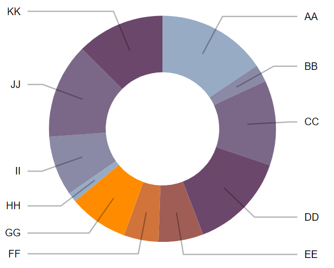

Graphique Camembert

La création d'un Comembert se fait selon les étapes suivantes :
-
Création du générateur de tranches à l'aide de
d3.pie().
Ce générateur pertmettra de (mapper) transformer les données en ajoutant
des caractéristiques de la tranche; startAngle(),
endAngle() etc.
-
Utilisation des données transformées pour générer les attributs
d
des éléments <path> pour chacune des tranches. Cette
opération est réalisée à l'aide du générateur d3.arc(). Le rayon du
Camember est configuré à l'aide de la propriété outerRadius() et
éventuellement un rayon intérieur avec innerRadius()